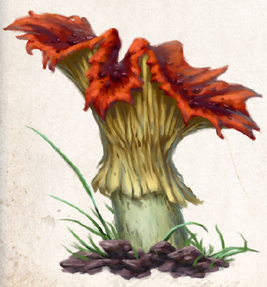

Ein gezackter feuerroter Hut mit dunkelroten Poren auf einem hellgelben, breiten Stil kennzeichnet die Dämonenklaue. Der Pilz kommt an den Rändern von Nadel- und Laubwäldern südlich von Riva vor und tritt zwischen Rahja und Travia in Erscheinung. Sehr selten wächst er auch in unmittelbarer Nähe einer Birke, in der eine Baumnymphe lebt und ein Band mit den Pilzen eingeht. Solche Nymphen gelten als Orakel, deren Botschaft oft kaum verständlich ist. Dies mag daran liegen, dass der Genuss des Pilzes nicht nur den Körper, sondern auch den Geist beeinflusst. Nivesische Schamanen nehmen ein Rauschmittel aus dem Pilz zu sich, um in die Welt ihrer Ahnen vorzudringen. Doch nur der geübte Geist erinnert sich nach dem Ende des Rauschzustandes an seine Erlebnisse. Ungeübte fallen in einen langen, tiefen Schlaf, aus dem sie ohne Erinnerung an die Zeit des Rausches wieder erwachen.
Bekannter ist die profane Giftwirkung der Dämonenklaue. Wird sie gegessen, setzt die Wirkung nach kurzer Zeit ein und ähnelt anfangs dem Alkoholrausch: Verwirrung, Störung von Sprache und Koordination. Später kommt es zu Krämpfen, Zuckungen, Angstzuständen, stark geweiteten Pupillen sowie der Störung von Zeit- und Orientierungsgefühl. Aber auch von Halluzinationen, dem Gefühl des Schwebens und großen Glücks wurde berichtet. Je nach Menge des genossenen Pilzes dauert dieser Zustand 10 bis 15 Stunden an, ehe tiefer Schlaf ihn beendet. Doch die Dämonenklaue verfügt ebenso über medizinischen Nutzen. Wird der Pilz für mehrere Tage in starkem Alkohol eingelegt, hilft die so gewonnene Lösung, äußerlich aufgetragen, bei Gelenkschmerzen, Prellungen und Stauchungen. In geringen Dosen innerlich angewendet lindert sie Kopf- und Magenschmerzen.
Verbreitung:
Landschaftstyp: Wälder
Regionen: überall südlich von Riva in Wäldern des Nordens, Mittelländischen Wäldern (gemäßigtes, tobrisches und yaquirisches Klima) und Immergrünen Wäldern (Südosten)
Suchschwierigkeit: -3
Bestimmungsschwierigkeit: -2
Anwendungen: 1/1/1/2/2/2
Wirkung:
Roh:
Berührung: keine
Einatmung: keine
Verzehr: giftig (Stufe 1, Wirkung: 1 Stufe Verwirrung, keine Regeneration in der darauffolgenden Regenerationsphase, Dauer: 10 Stunden; Mehrfachanwendung möglich: je weiterer Anwendung nach der ersten 1 Stufe Schmerz zusätzlich)
Verarbeitet: siehe Rezepte
Preis: 5 / 10 Silbertaler
Rezepte:
Pflanzliche Rauschmittel: Schleieröffner
Alltagsarzneien und Volksbrauchtum: Mittel gegen Gelenkschmerzen, Prellungen und Verstauchungen (Lösung), Mittel gegen Kopf- und Magenschmerzen (Lösung);
wird für schamanistische Rituale genutzt und soll Gespräche mit Wesen jenseitiger Sphären ermöglichen.
Man sagt, wer nicht wieder aufwacht, hat einen besseren Ort gefunden.
Haltbarkeit:
Roh: siehe Haltbarmachung